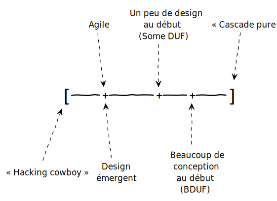

GRASP est un acronyme de l’expression anglaise « General Responsibility Assignment Software Patterns » c’est-à-dire les principes pour affecter les responsabilités logicielles dans les classes.
Une approche GRASP devrait amener un design vers la modularité et la maintenabilité.
L’acronyme d’une expression vulgarisée pourrait être POMM : « Principes pour déterminer Où Mettre une Méthode ».
En tant qu’ingénieur logiciel, vous devez décider souvent où placer une méthode (dans quelle classe) et cette décision ne devrait pas être prise de manière arbitraire, mais plutôt en suivant les directives d’ingénierie favorisant la modularité.
Alors, les GRASP sont les directives qui vous aident à prendre des décisions de conception, menant à un design avec moins de couplage inutile et des classes plus cohésives. Les classes cohésives sont plus faciles à comprendre, à maintenir et à réutiliser.
6.1 Spectre de la conception
Neal Ford (2009) a proposé la notion d’effort pour la conception qu’il a nommée le « Spectre de la conception ». La figure 6.1 illustre le principe.

À une extrémité, il y a la mentalité de mettre presque zéro effort pour une conception, que l’on nomme « Hacking cowboy ». C’est le cas lors d’un hackathon (un marathon de programmation durant 24 ou 48 heures où il faut produire une solution rapidement). Vous ne feriez pas un logiciel avec 10 patrons GoF ou les diagrammes UML pour réfléchir à votre architecture. Mais vous savez aussi que le code qui est produit lors d’un hackathon ne sera pas facile à maintenir. Le seul but est de faire du code qui marche pour montrer une idée intéressante.
Au fait, dans certains contextes d’entreprise (par exemple une entreprise en démarrage qui a seulement six mois de financement), c’est une situation similaire. Si une solution de « produit minimum viable » (MVP en anglais) n’existe pas à la fin de la période de financement, l’entreprise n’existera plus, car il n’y aura pas une deuxième période de financement. Si la compagnie est financée pour une deuxième période, la conception du code pourrait avoir besoin de beaucoup de soins, car elle a été négligée. Cette négligence à la conception (pour la maintenabilité) est aussi nommée la dette technique.
À l’autre extrémité du spectre, c’est beaucoup d’effort dépensé sur la conception, que l’on nomme « Cascade pure ». Dans le cycle de vie en cascade, on met un temps fixe, par exemple plusieurs mois, à étudier la conception. Comme toute chose poussée à l’extrême, ce n’est pas idéal non plus. Dans son livre, Larman (2005) explique en détail des problèmes posés par une approche en cascade. Dans certains domaines, par exemple les logiciels pour le contrôle d’avion ou des appareils médicaux, une approche en cascade est encore utilisée, en dépit des problèmes dus à l’approche. La sécurité et la robustesse des logiciels sont très importantes, alors on passe beaucoup de temps à vérifier et valider la conception. Puisque les exigences sont plus stables (et les développeurs ont a priori une meilleure compréhension du domaine), l’approche en cascade n’est pas si mal. Pourtant le coût pour produire des logiciels certifiés est énorme.
Le spectre de la conception est très important pour le monde réel, parce que une ingénieure ou un ingénieur devrait pouvoir s’adapter selon les attentes de son travail. Le dogme sur « la bonne manière » de développer un logiciel est souvent sans contexte. C’est le contexte de l’entreprise pour laquelle vous travaillez qui peut déterminer combien d’effort à mettre sur la conception. Cependant, méfiez-vous des entreprises qui ne portent aucune attention à la conception (l’extrémité « hacking cowboy » du spectre), même si on vous dit que c’est « agile ».
6.2 Tableau des principes GRASP
Voici un extrait du livre de Larman (2005).
| Pattern | Description |
|---|---|
| Expert en information F16.11/A17.11 |
Un principe général de conception d’objets et d’affectation des responsabilités. Affecter une responsabilité à l’expert – la classe qui possède les informations nécessaires pour s’en acquitter. |
| Créateur F16.10/A17.10 |
Qui crée ? (Notez que Fabrique Concrète est une solution de rechange courante.) Affectez à la classe B la responsabilité de créer une instance de la classe A si l’une des assertions suivantes est vraie : 1. B contient A 2. B agrège A 3. B a les données pour initialiser A 4. B enregistre A 5. B utilise étroitement A |
| Contrôleur F16.13/A17.13 |
Quel est le premier objet en dehors de la couche présentation qui reçoit et coordonne (« contrôle ») les opérations système ? Affectez une responsabilité à la classe qui correspond à l’une de ces définitions : 1. Elle représente le système global, un « objet racine », un équipement ou un sous-système (contrôleur de façade). 2. Elle représente un scénario de cas d’utilisation dans lequel l’opération système se produit (contrôleur de session ou contrôleur de cas d’utilisation). On la nomme GestionnaireX, où X est le nom du cas d’utilisation. |
| Faible Couplage (évaluation) F16.12/A17.12 |
Comment minimiser les dépendances ? Affectez les responsabilités de sorte que le couplage (inutile) demeure faible. Employez ce principe pour évaluer les alternatives. |
| Forte Cohésion (évaluation) F16.14/A17.14 |
Comment conserver les objets cohésifs, compréhensibles, gérables et, en conséquence, obtenir un Faible Couplage ? Affectez les responsabilités de sorte que les classes demeurent cohésives. Employez ce principe pour évaluer les différentes solutions. |
| Polymorphisme F22.1/A25.1 |
Qui est responsable quand le comportement varie selon le type ? Lorsqu’un comportement varie selon le type (classe), affectez la responsabilité de ce comportement – avec des opérations polymorphes – aux types pour lesquels le comportement varie. |
| Fabrication Pure F22.2/A25.2 |
En cas de situation désespérée, que faire quand vous ne voulez pas transgresser les principes de faible couplage et de forte cohésion ? Affectez un ensemble très cohésif de responsabilités à une classe « comportementale » artificielle qui ne représente pas un concept du domaine — une entité fabriquée pour augmenter la cohésion, diminuer le couplage et faciliter la réutilisation. |
| Indirection F22.3/A25.3 |
Comment affecter les responsabilités pour éviter le couplage direct ? Affectez la responsabilité à un objet qui sert d’intermédiaire avec les autres composants ou services. |
| Protection des variations F22.4/A25.4 |
Comment affecter les responsabilités aux objets, sous-systèmes et systèmes de sorte que les variations ou l’instabilité de ces éléments n’aient pas d’impact négatif sur les autres ? Identifiez les points de variation ou d’instabilité prévisibles et affectez les responsabilités afin de créer une « interface » stable autour d’eux. |
6.3 GRASP et RDCU
Les principes GRASP sont utilisés dans les réalisations de cas d’utilisation (RDCU). On s’en sert pour annoter les décisions de conception, pour rendre explicites (documenter) les choix. Voir la section Réalisations de cas d’utilisation (RDCU) pour plus d’informations.
6.4 GRASP et Patterns GoF
On peut voir les principes GRASP comme des généralisations (principes de base) des patterns GoF. Voir la section Décortiquer les patterns GoF avec GRASP pour plus d’informations.